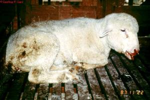
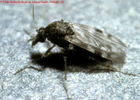
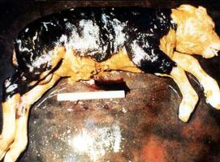
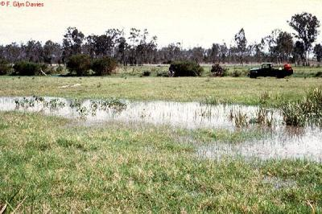
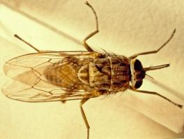
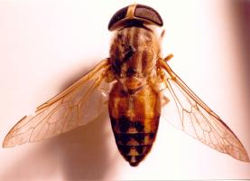

Flies and Mosquito Borne Diseases (new)
{kind=link}
Some very serious diseases of both humans and livestock in Africa are transmitted by different types of flies and mosquitos. These include Rift Valley Fever, Trypanosomiasis, Blue-tongue and 3-day sickness (Ephemeral Fever).
3-Day Sickness: Cattle and Water buffalo
Bluetongue: Ruminants (mostly Sheep and Cattle)
Rift Valley Fever: Domestic ruminants (cattle, sheep, goats, camels, domestic buffaloes) and human
Trypanosomiasis/Nagana: Cattle, camels, pigs, donkeys, goats, sheep, horses and dogs
3-Day Sickness (Ephemeral Fever)
Local Names: Gabbra: Butt / Kipsigis: miotap butusiek somok / Samburu: lakirkir / Somali: tuhya
Common Names: Three Day Sickness, Stiff Sickness
Description: Flies and mosquito borne disease
Host: Cattle and Water Buffalo
Introduction
3-Day Sickness is a mosquito-transmitted, viral disease of cattle and water buffalo found in Africa, the Middle East, Asia south of the former USSR, and Australia. Infections with no illness can also occur in wild buffalo, waterbuck, hartebeest, wildebeest, deer and possibly goats.
Mode of Spread
This disease is only transmitted through mosquito bites, not through direct contact between sick and healthy animals. The virus does not persist in recovered cattle and most recovered cattle have life-long immunity. The insects responsible for spread of the virus are several species of midges (small flies, smaller than mosquitoes) and mosquitoes. Outbreaks are more common when wet conditions favour multiplication of the midge and mosquito populations. Wind may spread the midges and mosquitoes over large areas.
Occurrence and severity of the disease may vary from year to year. The disease can disappear for ten years and more, to return when the resistance of the cattle population is diminished, because the old immune cattle are all gone. During the periods in between large outbreaks, the disease is still present but the number of animals affected is very low and sporadic cases may occur without being recognised.
Recurrence depends primarily on suitable environmental conditions for the increase and dissemination of the insect vector. Outbreaks may depend on a change in the virulence of the virus or an increase in the insect population.
During epidemics many animals may be affected within days or 2-3 weeks.
Signs of Ephemeral Fever
After an incubation period of 2-10 days the virus causes inflammation in the joints, muscles and lymph nodes.
- There is a sudden fever of up to 40.5degC - 41degC (105degF - 106degF) lasting for only 1.5 to 2 days, an increased respiratory rate, difficulty in breathing and a sudden drop in milk yield in lactating cattle. Cattle stop eating and drinking and are depressed; there can be drooling, nasal discharge and watery eyes.
- Muscle stiffness and pain sometimes only begin on the second day of illness, affected cattle can shiver and become very stiff and show shifting lameness, they are reluctant to move and some may refuse to stand up.
- Occasionally there is constipation or diarrhoea.
- The most characteristic signs, however, are the stiffness or lameness. Some animals become recumbent (lie down) and paralyzed from 8 hours to a week. In exceptional severe cases animals suffer permanent paralysis, but this is uncommon and is often caused by accidental falling and injury when cattle have difficulties in standing up.
- In most cases spontaneous recovery occurs after about 3 days (that's why it is called 3-Day Sickness). In most lactating cattle milk production returns to normal within three weeks, but cattle towards the end of lactation may dry off. (After outbreaks of 3-Day Sickness there is often more mastitis than usual in the recovered lactating cattle.)
Bulls, heavy cattle, and high-yielding dairy cattle are the most severly affected, with calves less than 6 months of age showing no clinical signs. Pregnant cows may abort because of the high fever, especially those in late pregnancy. Bulls may suffer temporary infertility.
Diagnosis
This is based on the clinical signs and should pose no problem during an outbreak, but can be difficult in isolated cases. Sporadic cases may be confused with Laminitis, milk fever or a foreign body in the stomach. However, the spontaneous and fast recovery should aid diagnosis
Prevention and Control
Control of the insects is not possible. Vaccines are used in valuable and high yielding animals in South Africa and Australia. A double vaccination (4 weeks apart) is required to protect the animal, protection then lasts for about one year.
Treatment
Generally, no treatment is required, but in individual cases anti-inflammatory drugs, such as injectable phenylbutazone or flunixin will help recovery. Animals should be rested and not stressed, as this may cause the disease to come back. Cattle with Ephemeral Fever must not be drenched or force-fed because they are unable to swallow and drenching will cause aspiration pneumonia. Cattle that are unable to stand up can be given a subcutaneous calcium injection, which will give them strength to rise.
Cattle that cannot stand up for more than 8 hours should be rolled over several times a day to avoid permanent muscle damage in the legs (same as in downer cows after calving).
Bluetongue
Names: Bluetongue
Description: Flies and mosquito borne disease
Host: Sheep (mostly British and Merinos), Cattle and Goats
Introduction
It is characterized by fever, swelling / inflammation of the nose, lips, tongue, gums and muzzle, muscle pain and lameness due to inflammation of the coronary band of the hoof (=where the hoof meets the skin of the leg).
The disease is common worldwide wherever conditions favour the survival of the Midges.
There are 24 different serotypes of Bluetongue viruses worldwide but not all types occur in one and the same geographical area. A sheep that is immune to one type of Bluetongue can still become sick from one of the other 23 types.
Bluetongue is a potentially very serious disease in sheep. The greatest loss sustained by the owner is an indirect one owing largely to the very marked loss in condition, the long recovery period and the break in wool, which are the inevitable results of an attack of Bluetongue. Many affected sheep remain in such a state of weakness following infection that many weeks or months of good feeding may be required before they regain condition. Awareness of this disease and how to combat it should be part of the armoury of every sheep farmer.
|  |
| Sheep with Bluetongue disease |
| (c) Geoffrey P. Gard. Reproduced from the Animal Health and Production Compendium, 2007 Edition. CAB International, Wallingford, UK, 2007
|
|  |
| Female Culicuides Midges transmit Bluetongue disease |
| (c) Philip Mellor
|
Mode of Spread
Bluetongue is spread by biting midges (small flies, called Culicoides), which is Culicoides imicola in Africa, Southern Europe and the Middle East. Mechanical transmission by other bloodsucking insects is over minor significance.
Infected Culicoides prefer warm, moist conditions and are highly nomadic, moving over vast distances thereby allowing the virus to spread over large areas.
Bluetongue is seasonal and occurs when the Midges /Culicoides are most active.
Cattle can act as carriers because the virus persists in the blood of cattle for up to 9 weeks. Most midges have a preference for cattle and will suck rather on cattle than on sheep when both species are housed together. But it is the sheep that become severely ill.
Sheep that survive Bluetongue become immune to the virus type that infects them, but they remain susceptible to the other Bluetongue virus types. Lambs from immune ewes can also become immune if infected early in life. Sheep of about one year of age are at the highest risk of suffering from Bluetongue. Cattle, when infected, mostly undergo hidden infections, not showing any disease.
Bluetongue can also cause abortions and birth of abnormal lambs due to virus infection during pregnancy.
British breeds of sheep and Merinos appear to be much more susceptible to Bluetongue than do native African sheep. But when African sheep that are normally kept in dry Culicoides free area are suddenly moved into a more humid Culicoides infected zone they can also become sick. Young sheep about a year old are most susceptible.
Exposure to a lot of sunshine seems to increase the severity of the disese.
Signs of Bluetongue
- The incubation period is about a week. Onset of illness is manifested by a high fever, which fluctuates for about a week.
- Together with the fever there is inflammation of the lips and nose, excessive salivation with licking of the lips and a clear nasal discharge. Within a few days the discharge contains mucous and pus and is bloodstained. It then dries, encrusting the nostrils.
- Meanwhile the lips swell and are very tender and bleed when handled. Sometimes a swollen, blue tongue is evident. The face swells. Deep ulcers, filled with white, dead debris appear at any site where there is irritation.
- Towards the end of the fever, lameness and stiffness develop. The lameness is due to inflammation at the coronary band of the hoof (where the hoof meets the skin of the leg), manifesting as a red or purplish band which travels down the hoof with the growth of horn. The stiffness is due to muscle pain. Severely affected animals lie down and will only move on their knees if forced.
- Twisting of the neck, may occur due to the direct effect of the virus on muscle tissue. After this, emaciation and weakness are rapid.
- Secondary infections of the respiratory tract are common and diarrhoea, often bloodstained, is sometimes seen.
- The mortality rate varies from 0 to 30%, although, in some epidemics it may reach 90%. Severely affected animals die within a week of the onset of fever, but others may linger on and only die after a month.
- Recovery in surviving sheep is prolonged and such animals frequently exhibit a moth-eaten appearance caused by breaks in the wool.
- The disease in cattle is frequently unapparent, although a few animals may develop signs similar to that seen in severely infected sheep. These include fever of 40degC to 41degC, stiffness, laminitis (damage to the sensitive tissue of the hooves), excessive salivation, swelling of the lips, loss of appetite, nasal discharge and a bad smelling breath. Ulcerative lesions may appear on the tongue, dental pad and muzzle. A severe inflammation of the coronet of the hoof may occur, sometimes with sloughing of the hoof. A discharge may appear at the nostrils and from the eyes. Wounds may occur on the teats.
- Infected goats show little in the way of clinical symptoms.
- Cattle and sheep infected during pregnancy may abort or deliver malformed calves or lambs.
Diagnosis
The history and clinical signs in sheep are highly suggestive and help in making a presumptive diagnosis.
Changes are very prominent in the mouth, where the mucous membranes (and the tongue) are full of blood and sometimes have a bluish discoloration. Discharge and flakes which are often covered with gray dead tissue are present on the lips, hard palate, cheeks and tongue. The nostrils are partly blocked by encrusted nasal discharge. The upper respiratory tract is inflamed and occasionally the lungs have fluid.
Exposed areas of skin have irregular encrusted eruptions.
In order to confirm the presumptive diagnosis a veterinary surgeon will take blood samples for analysis.
Diseases with similar symptoms
Bluetongue must be differentiated from other diseases which may have some symptoms in common. These include Foot and Mouth Disease, Sheep and Goat Pox and Orf in sheep and Foot and Mouth Disease, Ephemeral Fever, Sweating Sickness in cattle, and PPR/ Goat Plaque.
Prevention and Control
- Moving sheep during the rains to high, well-drained ground where there are no Midges/Culicoides will help to reduce the risk of infection.
- Midges are mostly active at dusk, dawn and at night. Smoke fires at night and use of insecticides when midges are very active have a role to play and housing cattle together with sheep on the grounds that Culicoides prefer cattle blood to sheep blood should be considered.
- Yearly vaccination of sheep with a live attenuated vaccine containing six strains of Bluetongue virus, available from KEVEVAPI, Nairobi, is recommended, and will do much to keep losses to a low level. It will not prevent the disease 100% as other strains of the virus not incorporated in the vaccine may be present in the locality.
- Lambs under three months should not be vaccinated nor should pregnant ewes, under normal circumstances.
Treatment
There are at presently no drugs which have a curative effect on Bluetongue. Antibiotics however, have a beneficial effect in combating secondary bacterial infections.
Careful nursing of affected animals is important. Affected animals should be placed in sheds or stables and protected from extreme temperature and from direct sunlight. Small quantities of soft green feeds should be given during the stage when mouth lesions make feeding painful.
Secondary invaders can be controlled by the application of lotions to the wounds. Careful and good feeding will reduce the duration of the recovery period and assist in re-establishing normal health in the sheep flock.
Rift Valley Fever
Scientific Names: Enzootic hepatitis
Description: Mosquito borne disease
Host: domestic ruminants (cattle, sheep, goats, camels, domestic buffaloes) and human
Introduction
|  |
| Aborted foetus after Rift Valley Fever |
| (c) USDA
|
|  |
| Widespread flooding causing mosquito eggs to hatch |
| (c) F. Glyn Davies
|
Mode of spread
Signs of Rift Valley Fever
- The incubation period in lambs is 12 to 36 hours. A fever of up to 41degC (106degF) may develop.
- Peracute infections occur in new-born lambs which die within hours. Acute reactions occur in older lambs and calves and occasionally in adult sheep.
- In very severe infection in calves, death may occur in 2 days after infection without their showing any clinical signs.
- A haemorrhagic syndrome was observed during the last outbreak in Kenya, affecting adult cattle.
- In its severe form, calves will develop high fever, and may vomit. Some nasal discharge may also be seen followed by prostration and mortality may reach up to 70%.
- Almost all infected pregnant sheep and camels abort within a short period and at very different stages of pregnancy. Cattle are more resistant but may also abort.
- Subacute reactions occur in adult sheep, cattle and camels. There is a low-grade fever, partial lack of appetite and general weakness. Jaundice is prominent and foul smelling diarrhoea can occur.
- In pregnant ewes the mortality and abortion rates varies from 5 - 100%. Abortion rates in pregnant camels are between 80% and 100%
Diagnosis
Prevention and Control
- Outbreaks of Rift Valley Fever generally occur after periods of prolonged and very heavy rain. Such being the case livestock owners should be aware that if long rains are excessively heavy and cause widespread flooding, an outbreak of Rift Valley Fever is likely to occur.
- Control of mosquitoes through use of insecticides, acaricides and pour-ons, movement of stock to dry areas or to higher cooler altitudes can all help in preventing the RVF outbreak from reaching your herd.
- Immunisation remains the only effective way to protect livestock but vaccination of animals with suitable RVF vaccines can only be carried out under authority of the DVS by government veterinary vaccination teams. Some live RVF vaccines can also cause abortions and should NOT be used in pregnant animals.
Treatment
Trypanosomiasis / Nagana
Scientific Name:Trypanosomiasis brucei
Local Names: Luo: tuo maugo, nyalolwe / Kamba: kamosu, ksiko / Kipsigis: kanyagat / Meru: mutombo / Gabbra: ghandi, ndukan, kando / Samburu: itikana, saar / Swahili: lotorobwo, ndorobo /Somali: agku, aino, angsulleh, attech, bargerish, dorobo, dukan, gandi, gindi, gundho, korbarar, malale, salaf, suuilleh / Turkana: edeke lo eidiit, lokipi, lotorob, tikana, lonyang / Maasai: Kububwuo, dorobo / English: Trypanosomosis/Trypanosomiasis
Common Names: Nagana, Surra, Dourine, Sleeping sickness
Description: Tse-Tse Fly transmitted disease
Host: Cattle, camels, pigs, donkeys, goats, sheep, horses, dogs and human
Introduction
Tse-Tse Fly transmitted Trypanosomiasis is a parasite infection of cattle, camels, pigs, donkeys, goats, sheep, horses and dogs. It also affects humans as Sleeping Sickness. The disease occurs worldwide in tropical and sub tropical countries. It is caused by microscopically small blood parasites called Trypanasoma or, in short, Tryps. The major species are Trypanasoma congolense, Trypanasoma vivax, Trypanasoma brucei and Trypanasoma simiae.
In Kenya trypanosomiasis occurs where host, parasite and transmitting Tse-Tse flies occur together. This includes areas near Lake Victoria, Southern Kenya around Lake Magadi and the Nguruman Escarpment and the Mara, the Coastal areas and around Tsavo National Park. Transmission of T.vivax in cattle can sometimes be maintained in the absence of Tse-Tse flies through normal biting flies (Tabanids). This happens in areas bordering Tse-Tse infested zones where migrating infected cattle have introduced the Trypanosomes. - The cool Highlands and arid parts of North Kenya are free from Tse-Tse transmitted Tryps, except when infected animals are brought in from endemic areas.
In humans the disease is known as sleeping sickness.
Mode of Spread
The disease is transmitted in Africa by Glossina tsetse flies and in exceptional cases also mechanically by biting flies. Tsetse-transmitted trypanosomes are maintained in wild animals. Adult Tse-Tse flies are aggressive blood-suckers and seek out suitable hosts in daylight by sight and smell. Different fly species favour certain hosts. Warthog, eland, buffalo bushbuck, bushpig, duiker, certain reptiles and hippo are peculiarly sought out by certain flies. In these wild animals the disease is mild and symptomless and they act as reservoir hosts from which domesticated livestock can be infected.
|  |
| Adult Glossina Tsetse fly |
| (c) John W. McGarry and the School of Vet Science in Liverpool
|
Animals are infected with trypansomes by the bite of an infected tsetse fly. Tsetse flies themselves become infected when they feed on an infected animal host: the ingested trypanosomes undergo a cycle of development in the fly lasting between 8 to 35 days before infective trypanosomes are produced. Once infected a fly is usually capable of transmitting trypanosomes for the rest of its life. Infection rates in wild populations of tsetse flies are normally low, varying from 1 to 20%.
All species of domestic animals are susceptible to infection but infections with tsetse fly transmitted Tryps are particularly important in cattle. African Zebus are fully susceptible to Tryps infection, but certain breeds of small hump-less West African dwarf-cattle i.e. the Ndama can be resistant.
Types of Tsetse Flies
Tsetse flies can be divided into three groups - forest, riverine and savannah. Trypanosomiasis becomes important when man and domestic livestock compete with wildlife and tsetse for graying land, or come into contact with tsetse as a result of other activities (e.g. cattle crossing into tste-tse infested riverine zones during drought).
Forest tsetse are of least importance as their habitat is frequently unsuitable for raising livesteock. Riverine tsetse are more important because they infest vegetation near essential water supplies. The most important are the savannah tsetse as the inhabit vast areas of land otherwise suitable for grazing animals. The flies prefer shade and have a limited flight distance. They tend to live along dry riverbeds, areas of thick bush and clumps of trees. From here they venture out during the day to feed on wild and domestic animals.
|  |
| Tabanid fly |
| (c) John W. McGarry and the School of Vet Science in Liverpool
|
Biting flies are involved mainly in the transmission of T. evansi in camels which is transmitted by tabanid camel flies.
Tabanid flies are persistent, aggressive feeders, annoying the host so that feeding is often interrupted, thus ensuring that several new hosts may be bitten, increasing the possibility of multiple infections. Wildlife normally plays little or no part in the transmission of trypanosomiasis in camels.
Signs of Trypanosomiasis
Trypanosomes appear in the blood of infected animals from between 3 to 16 days after initial exposure, the time factor being dependant on the species of trypanosome. Trypanosomes vary in their grade of attack. Trypanosoma vivax can cause a severe, rapidly deadly disease with a characteristic haemorrhagic syndrome, Trypanosoma brucei in cattle can be quite mild, while Trypanosoma congolense varies in severity. Mixed infections can also occur.
The primary clinical signs are periodic fever, anaemia, and weight loss. In cattle it is a long-lasting (chronic) disease with a high mortality. Rapid onset severe (acute) infections occasionally occur, notably with T. vivax in cattle.
- Infected animals are usually tired and weak and are left behind by the rest of the herd. There is an intermittent fever. They appear sleepy, have rough, dull coats, progressive anaemia and lose condition.
- Superficial lymph nodes are usually enlarged and prominent, sometimes leading to a mistaken diagnosis of ECF.
- The animal has a foul smell that slme herders can recognize.
- There is a severe drop in milk production.
- There is a watery discharge from the eyes of sick animals, especially those infected with T. vivax, and the eyes of such animals are cloudy and blink a lot.
- Paleness of the gums, under the tongue and inside the eyes becomes visible after several weeks of infection.
- Pregnant animals abort or give birth to weak offspring while some animals become infertile.
The disease can become more severe due to accompanying factors like poor nutrition, stress and over working. Some animals recover very slowly without treatment while others become very sick, collapse and die after a few months.
Diagnosis
The area, the presence of tsetse flies, the appearance of weak, anaemic, sleepy and tired, emaciated animals should be a warning sign that they may be infected with trypanosomiasis. Vets can check for trypanosomes by directly examining a fresh blood sample under the microscope. Tryps can also be seen in dried and stained blood smears, but chances of finding the tryps are lower than in fresh blood. If fresh liquid blood samples have overstayed, it can be difficult to see the Tryps under the microscope.
The use of small field centrifuges has helped greatly in Tryps diagnosis in the field. Other diseases can be confused superficially with trypanosomiasis, so demonstration of the parasite is most important. Hence the alerting of a skilled veterinarian is vital to obtain a diagnosis. ECF in acute cases, and worm infestations and malnutrition in chronic cases can be confused with trypanosmiasis.
Prevention and Control
Avoid fly-infested areas and minimize contact between livestock and wild animals.
- The use of insecticidal attractants in tsetse traps has considerably reduced tsetse fly numbers in the areas which they have been used, utilising the fact that tsetse flies are attracted to colours such as dark blue. These traps should be used wherever possible. Trapping technology is relatively simple and less polluting to the environment than insecticide application.
- Take animals to water when fly activity is low, flies are inactive at night - so crossing a river or watering in the dark is an option.
- Repel flies with smoke from smouldering cow dung.
- Seperate sick animals from healthy ones. The disease is not contagious but when cattle are together they attract flies, which may transmit infection.
- Use of less tryps sensitive breeds of cattle such as Orma Boran.
- Clear thick bush to reduce tsetse habitat.
- Use insecticidal pour-ons on cattle such as Cypertick and Ectomin (not organic and mostly useless).
- Frequent spraying and dipping of animals.
- Use preventative anti-Tryps drugs (called trypanocide or trypanocidals) such as Samorin and Suramin - one injection prevents Tryps infection for many weeks.
- Good nutrition, especially where exotic breeds are reared.
Tsetse Trap
Insect specialists at ICIPE found out that tsetse flies are attracted to blue colour, prefer black cloth to land on and will use white colour as an orientation. According to this research findings, traps have been designed with blue/black/white cloth. To discourage theft, slits can be made in the blue cloth. To incease trap efficiency, cow urine is placed under the traps in plastic bottles.
Trap densities: In the case of savannah species each fly may disperse up to 500 metres in a single day, so that with an average trap density of just four traps per km2, there is a high likelihood that each fly encounters at least one trap. However, species living in forests disperse little more than 5-10m per day, so that effective trap densities need to be very much higher.
Traps are relatively inexpensive and lend themselves to community participation. However, problems are experienced due to trap theft, vandalism, and damage by wildlife. To reduce theft of traps, and vandalism requires at the very least a high degree of community education and awareness-raising. Such community awareness can be extended further to community participation, involvement of local people in control activities, and even community-based systems, such as management and financing.
More information on different models of tsetse traps available under www.vestergaard-frandsen.com.
Recommended Treatment
No new drugs for either treatment or prevention have been developed for a very long time so it is vital to use those few that are available properly to avoid drug resistance. Most importantly animal bodyweights should not be underestimated. The following treatments can be used:
- Berenil, Norotryp, etc (Diminazine aceturate): other names Trypazen, Diminazen. Should be prepared by mixing 2.36 g of powder with 12.5 ml of clean water. The mixture should be given as injection at 3.5 mg/kg body weight in the muscle. This amounts to one sachet per 300 kgs bodyweight.
- Novidium (Homidium chloride or bromide): other trade name Ethidium. Can be prepared by mixing 1 tablet 250 mg in 10 litre of sterile clean water and used soon after mixing at 1mg/kg body weight injected deep into the muscle.
- Samorin or Trypamidium (Isometamidium chloride): other trade names Trypacide. It can be prepared by mixing 125 mg of powder in 12.5 ml of clean sterile water and ensuring that all the powder dissolves. Inject the mixture deep intramuscular injection into the neck or slowly intravenously and ensure that medicine goes into the vein. The mixture should be used within 2 days.
- Samorin can be used to prevent the disease, given at intervals of about 4 months. Check dose rate and give according to the correct body weight.
- Camels: Use Tryquin as Berenil can be toxic to camels.
Traditional practices have been recorded, but no official testing has been carried out to confirm of disapprove the efficacy. Therefore it is highly recommended for all communities to use the methods of control that have been tested and found effective in order to keep their livestock healthy and alive.
Review Process
1. William Ayako, KARI Naivasha. Aug - Dec 2009
2. Hugh Cran, Practicing Veterinarian Nakuru. March - Oct 2010
3. Review workshop team. Nov 2 - 5, 2010
4. May 2013: Review by Dr Mario Younan (DVM, PhD), Regional Technical Advisor for VSF-Germany. working in East Africa since 1995
- For Infonet: Anne, Dr Hugh Cran
- For KARI: Dr Mario Younan KARI/KASAL, William Ayako - Animal scientist, KARI Naivasha
- For Department of Veterinary Services: Dr Josphat Muema - District Veterinary Officer Isiolo, Dr Charity Nguyo - Kabete Extention Division, Mr Patrick Muthui -. Senior Livestock Health Assistant Isiolo, Ms Emmah Njeri Njoroge - Senior Livestock Health Assistant Machakos
- Pastoralists: Dr Ezra Saitoti Kotonto - Private practitioner, Abdi Gollo H.O.D. Segera Ranch
- Farmers: Benson Chenge Kuria and Francis Maina Gilgil and John Mutisya Machakos
- Language and format: Carol Gachiengo
Information Source Links
- Animal Diseases in the Tropics 4th Edition Edited by Sewell and Brocklesby
- Barber, J., Wood, D.J. (1976) Livestock management for East Africa: Edwar Arnold (Publishers) Ltd 25 Hill Street London WIX 8LL
- Blood, D-C., Radostits, O.M. and Henderson, J.A. (1983). Veterinary Medicine - A textbook of the Diseases of Cattle, Sheep, Goats and Horses. Sixth Edition - Bailliere Tindall London. ISBN: 0702012866
- Blowey, R.W. (1986). A Veterinary book for dairy farmers: Farming press limited Wharfedale road, Ipswich, Suffolk IPI 4LG
- Force, B. (1999). Where there is no Vet. CTA, Wageningen, The Netherlands. ISBN 978-0333-58899-4.
- Hall, H.T.B. (1985). Diseases and parasites of Livestock in the tropics. Second Edition. Longman Group UK. ISBN 0582775140
- Hunter, A. (1996). Animal health: General principles. Volume 1 (Tropical Agriculturalist) - Macmillan Education Press. ISBN: 0333612027
- Hunter, A. (1996). Animal health: Specific Diseases. Volume 2 (Tropical Agriculturalist) - Macmillan Education Press. ISBN: 0-333-57360-9
- ITDG and IIRR (1996), Ethnoveterinary medicine in Kenya: A field manual of traditional animal health care practicies. Intermediate Technology Development Group and International Institute of Rural Reconstruction, Nairobi, Kenya. ISBN 9966-9606-2-7
- Pagot, J. (1992). Animal Production in the Tropics and Subtropics. MacMillan Education Limited London.
- The Merck Veterinary Manual 9th Edition, Merck & Co Inc Whitehouse Station NJ USA
- The Organic Farmer magazine No. 50 July 2009
- The Organic Farmer magazine No. 51 August 2009
- Vestergaard Frandsen (Supplier of tsetse traps and other technologies for disease control in the tropics) www.vestergaard-frandsen.com.